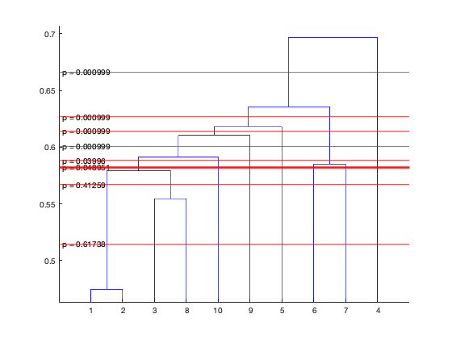

Simulated example on the use of hierachical contrast estimation using
ASCA
Contents
Simulate data
p = 20;
k = 6;
rep = 10;
D = fullfact([rep k]);
Dtrue = D;
Dtrue(ismember(Dtrue(:,1),[1 2 3]),1) = 1;
MODEL
M = [1 0; 0 1];
[X DM Xm] = simulateData(Dtrue,M,[0.1 0.1 .2],p,[]);
ASCA settings
plotit=0;
opt = ASCAcat('options');
opt.nperm = 1000;
opt.showtable = 0;
opt.rndfac = [];
Compute ASAC model
res1= ASCAcat(X,D,M, opt);
res1.ANOVAtab
ans =
5×8 cell array
Columns 1 through 5
{'Factor' } {'SS' } {'SS/SStot'} {'SSmarg/SStot'} {'DF'}
{'Factor1'} {' 15'} {'0.241' } {'0.241' } {'9' }
{'Factor2'} {'12.5'} {'0.200' } {'0.200' } {'5' }
{'Error' } {'34.8'} {'0.559' } {'0.559' } {' ' }
{'Total' } {'62.3'} {'1.000' } {'1.000' } {' ' }
Columns 6 through 8
{'BalNess'} {'P-value-freq'} {'P-value-Fest'}
{'1' } {'0.000999' } {'3.23e-12' }
{'1' } {'0.000999' } {' 0' }
{' ' } {' ' } {' ' }
{' ' } {' ' } {' ' }
Compute hieracical contrasts
rescont = ASCAcontrast(res1,1);
plotASCAcontrast(rescont);
Warning: Maximum likelihood estimation did not converge. Function evaluation
limit exceeded.
Warning: Maximum likelihood estimation did not converge. Function evaluation
limit exceeded.
